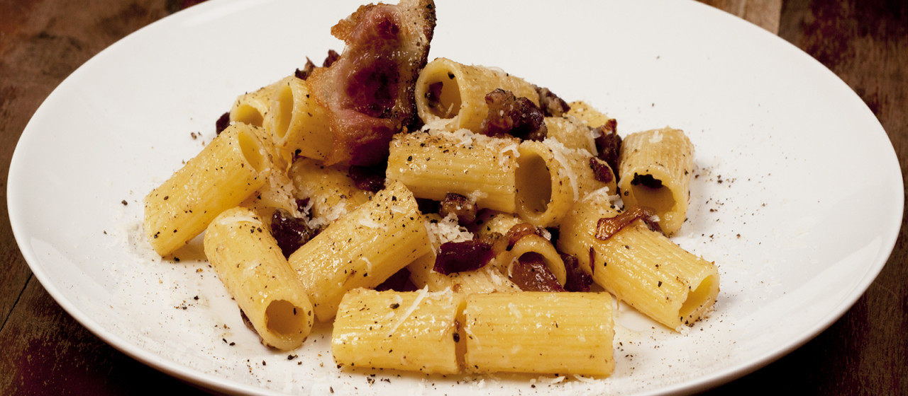

Rigatoni alla gricia

Roman-Style Rigatoni Alla Gricia Recipe
How to make rigatoni like a real Italian
Ingredients:
- 1 pound rigatoni
- 6 ounces guanciale
- 1/4 pound Pecorino Romano, grated
- freshly ground black pepper
- 1/2 cup white wine (optional)
- 1 small onion, finely chopped (optional)
Steps:
- Cut the guanciale in thick slices, then cut the slices in chunks about 1/3” wide.
- Throw the cut guanciale in a hot pan until the fat melts and the meat starts browning.
- Add onion and white wine, if using, and allow the wine to evaporate. Turn off the flame.
- Cook the rigatoni al dente and add to pan.
- Mix it up in the pan quickly until all the pasta gets moist with fat.
- Divide among plates and sprinkle with some freshly ground black pepper and grated pecorino romano.